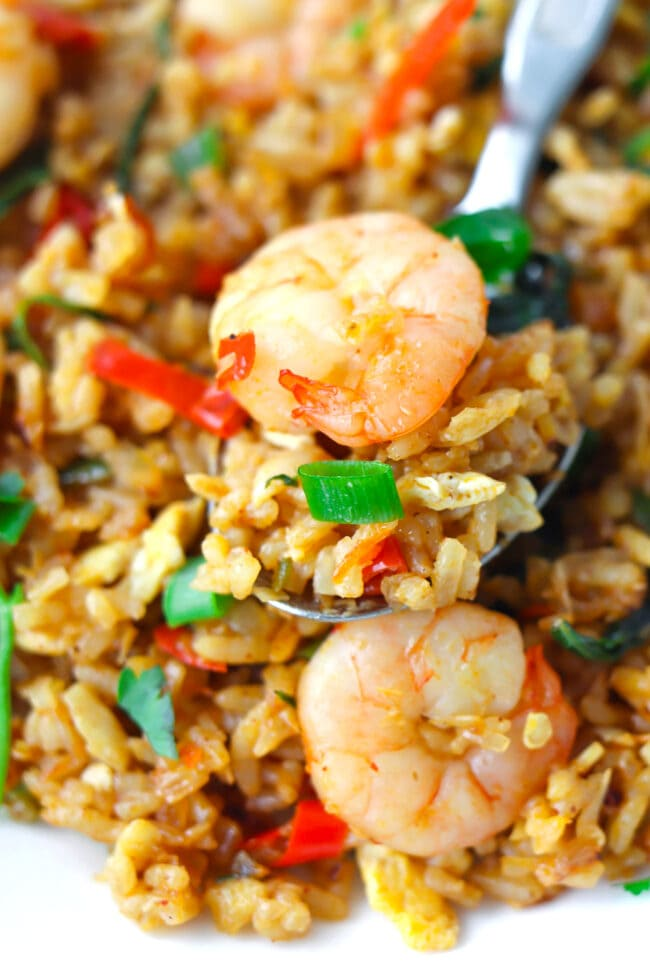

Shrimp Fried Rice
Some spicy shrimp fried rice. For when you don't feel like cooking.

Ingredients
- Day-old rice
- Frozen raw shrimp
- 2-3 Thai chilis
- Small yellow onion
- Green onions
- Garlic
- Small bag of frozen mixed veg
- 2 large eggs
- Oil, for cooking
- Soy sauce
- Mirin
- Sesame oil
Preparation
- Heat some oil in a pan with deep walls, or a wok. Add in your aromatics --sliced thai chilis and
minced garlic. On the side in another small pan, cook your eggs in a quick scramble. Take off
heat when they're not too dry.
- After your garlic and thilis have sat for some time, take your thawed shrimp and saute them in
the oil. Once they're about halfway cooked, add in your rice. The rice can be cold or warm, it's fine.
Break up the rice, and add in your frozen mixed veg, and the soy sauce, mirin, and sesame oil to taste.
Let the rice cook for a while, warming the frozen veg and cooking on the bottom.
- Once you're satified with the doneness of the dish, add in your scrambled egg.
- Top with diced green onions and serve.